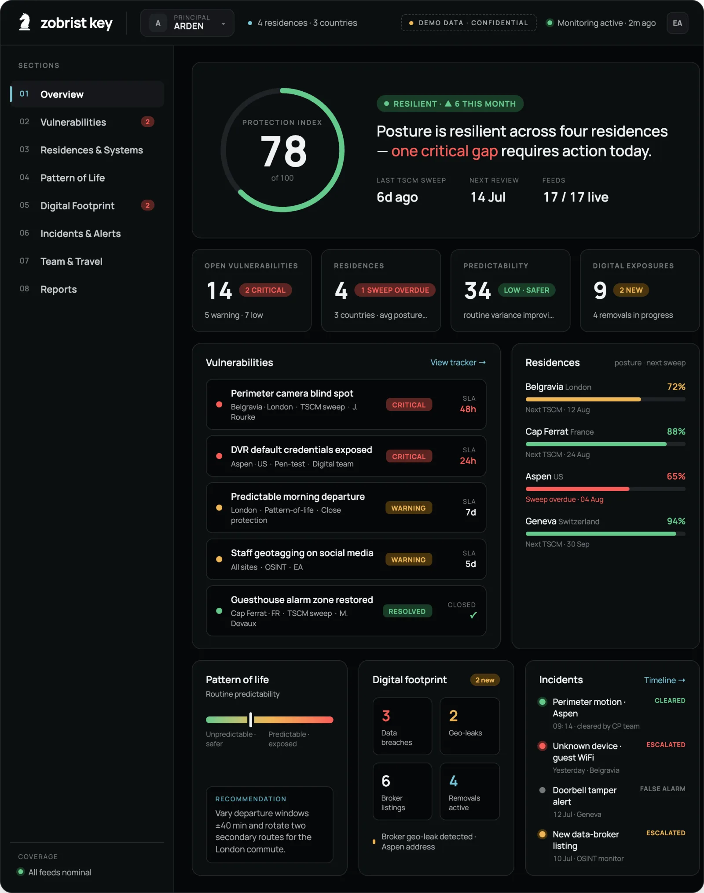
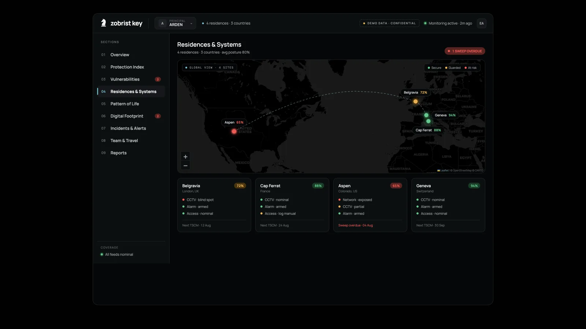
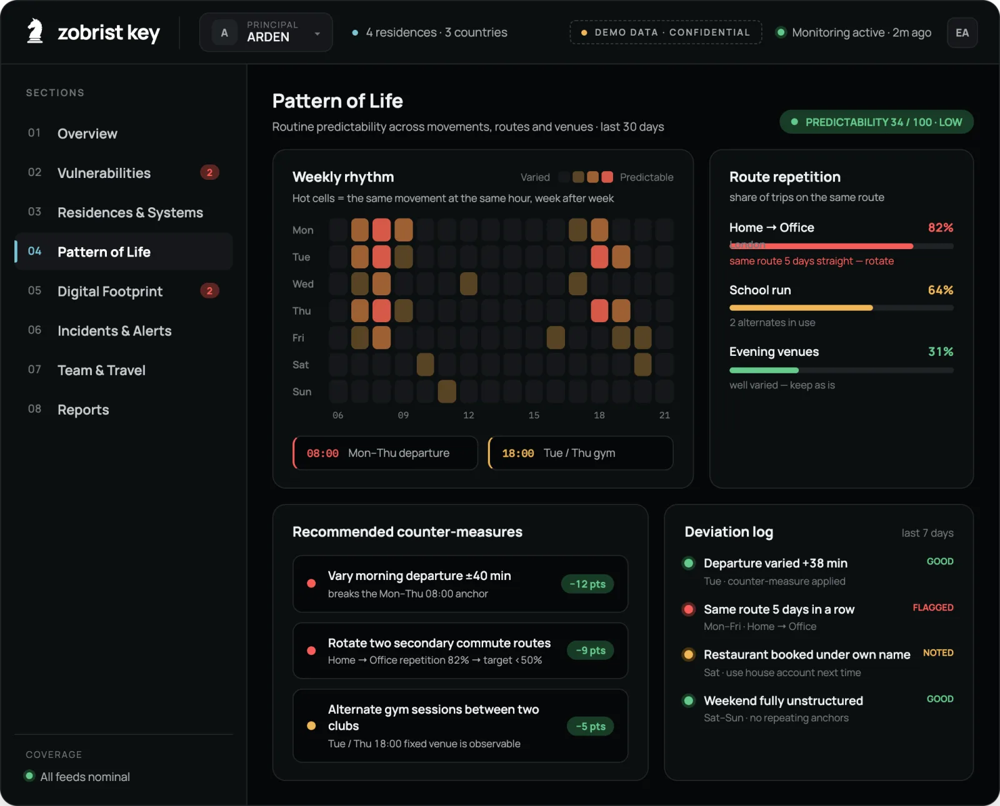
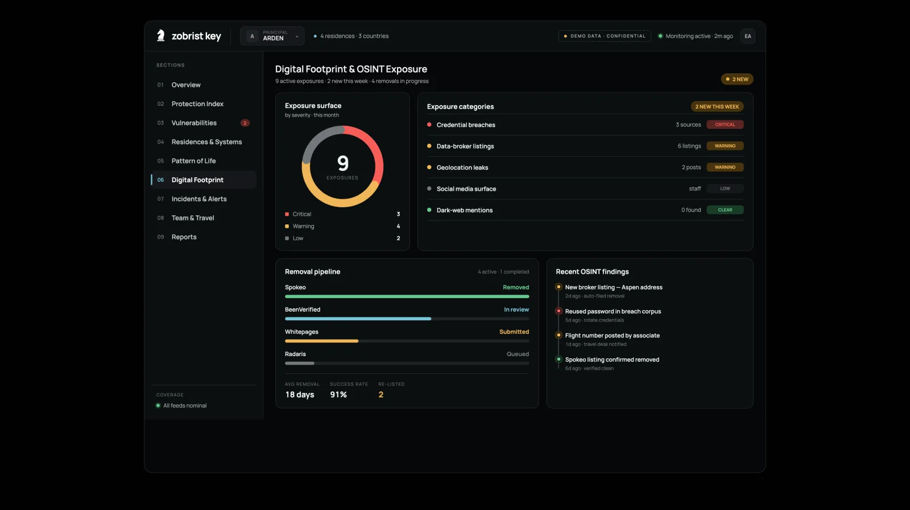

The platform
One platform runs it all.
Once everything is in place, one platform runs it all — the field practice and the software fused into a single, accountable picture of protection.
The practice
A vetted senior team in the field.
The platform
One Protection Index, trended and accountable.
Platform · Overview
One live picture. One score.
Every physical, behavioural and digital signal fused into a single Protection Index, with the one action that matters today surfaced up top.
- One Protection Index across ten categories — each scored out of ten, higher is safer
- Trended month over month, with the biggest available gains surfaced first
- Open vulnerabilities ranked by SLA, owner and site
- Live incident feed and per-residence posture at a glance

Platform · Residences
Every property. One map.
Every residence and its systems on a single live map, with weaknesses surfaced the moment they appear.
- Live posture per site across CCTV, alarm and access
- Overdue TSCM sweeps flagged automatically
- Global map with travel routes between properties

Platform · Pattern of life
Behaviour, quantified.
The hardest risk to measure, turned into a score you can act on and raise over time.
- Weekly-rhythm heatmap of routines and anchors
- Route-repetition scoring across daily movements
- Counter-measures with expected point impact
- Deviation log tracking every applied change

Platform · Digital footprint
Erase the digital trail.
Continuous monitoring of the open and dark web, with removals driven end to end.
- Continuous OSINT across breaches, brokers and geo-leaks
- Exposure surface segmented by severity
- Tracked removal pipeline with automatic re-filing
- Timeline of every new finding

Contact us
Begin with a private conversation.
Every engagement starts with a confidential briefing. We respond within 24 hours through the channel of your choosing.
Contact us